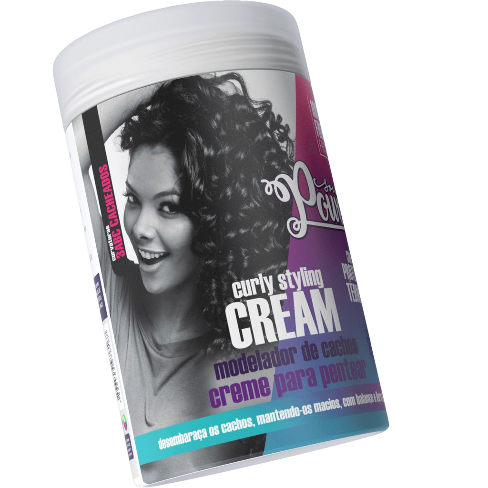

TIPO 3A

O tipo de cabelo 3A é fácil de identificar, ele é caracterizado por cachos grandes, soltos, largos, pouco definidos e com baixo fator de encolhimento.
Essa textura tende a lembrar o cabelo ondulado quando os fios estão longos, porque o peso do cabelo faz a raiz parecer mais lisa.
Te indicamos então: Soul Power
O Soul Power Curly Styling é um creme que vem fazendo muito sucesso entre as cacheadas, pois proporciona alta definição, brilho e movimento.
É ideal para realizar fitagem e prolongar os days-after, visto que é um creme denso, encorpado, mas de fácil aplicação.
A fórmula contém manteiga de karité, colágeno vegetal e óleo de oliva, ativos que definem os cachos, devolvem a elasticidade e promovem muita hidratação e proteção aos fios. Ideal para cabelos cacheados opacos e fracos.
Além disso, o creme é vegano, não é testado em animais e não leva petrolatos, silicones e sulfatos na sua fabricação. <3
